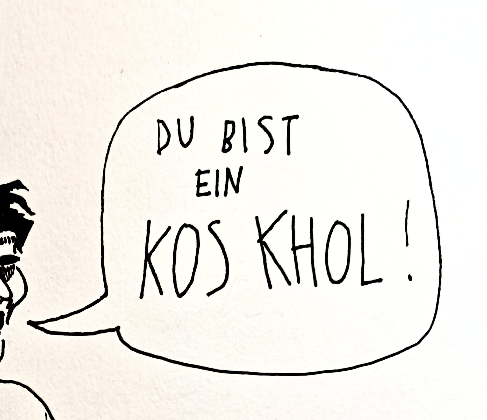
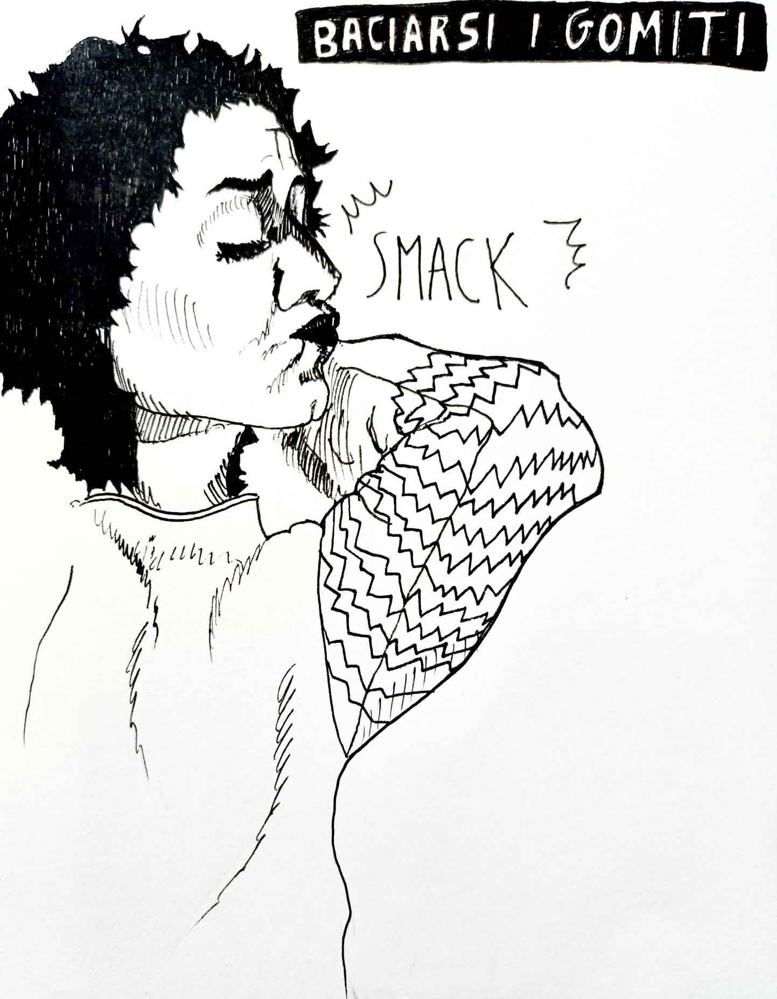
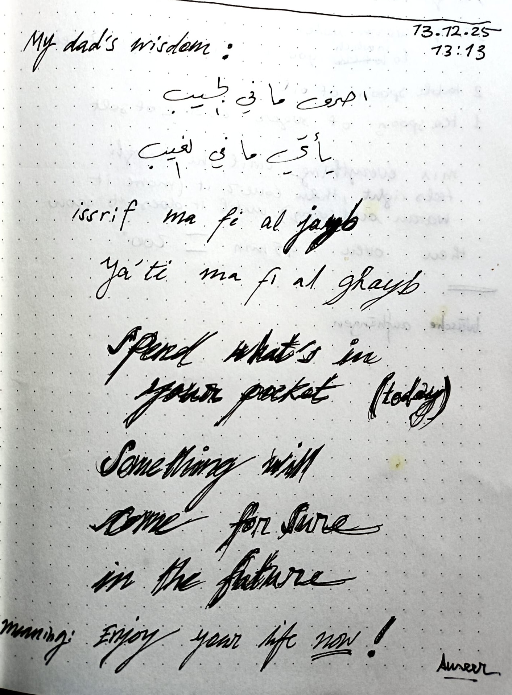
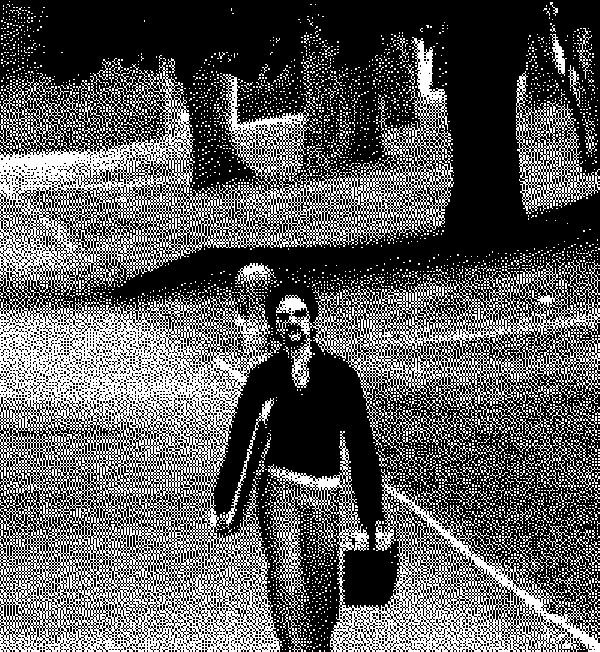
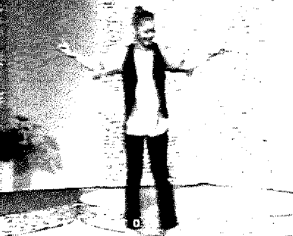
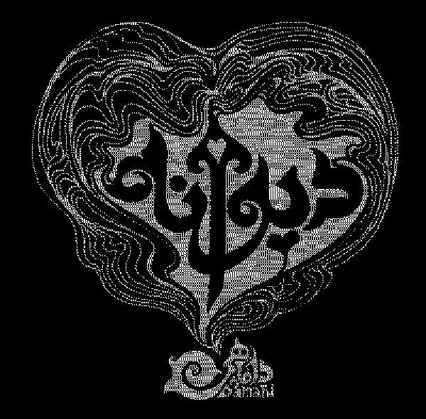
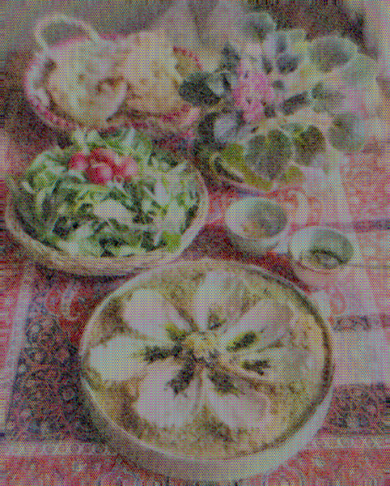

دیوانه -> DIVANEH
Damahi, 2019
I fear that in this sleeping, lucky country
I wake up and you’re not on this side of the border
In sleep I’m the earth and rain and wheat
I wake but you’re not the farmer
I fear that you’ll leave and the house collapses
I get crushed and you laugh at the architecture of debris
I get displaced, my country in your hands
alas if you don’t tie back the army of your hair
a crazy person enjoys seeing another crazy person
I fear the moment you’re not crazy
I keep mailing my dear life to your door
someone knocks for a lifetime, and you’re not home
you were created in my body like a crisis
I became a crisis from a kiss
the tragic end is awaiting me
I fear that moment of becoming like Farhad
the rein of my distress is out of my hands
a jinn has gone into this poetic meter
I fear becoming wasted, it’s a pity if you
don’t gaze even at my torn apart self
a crazy person enjoys seeing another crazy person
I fear the moment you’re not crazy
I keep mailing my dear life to your door
someone knocks for a lifetime, and you’re not home

کصخل -> KOSKHOL
by Erphaneh & Sara
idiot
It is a persian vulgar way (street language) of saying idiot. It litteraly means crazy pussy. I don’t know why we use the word pussy in everything but it must have 10000 year old root cause.
-Could there be a bigger koskhol than you?
-stop your koskhol bazi (fooling around) and get your ass over here
by Erphaneh & Sara
idiot
It is a persian vulgar way (street language) of saying idiot. It litteraly means crazy pussy. I don’t know why we use the word pussy in everything but it must have 10000 year old root cause.
-Could there be a bigger koskhol than you?
-stop your koskhol bazi (fooling around) and get your ass over here

نعيماً -> NA’IMAN
by Ameer
lit. “bliss”, is an arabic expression used as a compliment/congratulation to someone who recently had a haircut or just had a shower
by Ameer
lit. “bliss”, is an arabic expression used as a compliment/congratulation to someone who recently had a haircut or just had a shower

BACIARSI I GOMITI
by me
(to kiss one’s elbows)
Is an Italian idiom meaning to be extremely lucky or thrilled by something incredibly fortunate happening, something so rare you’d do the impossible act of kissing your own elbow in sheer joy. It signifies overwhelming happiness about an unexpected, wonderful event.
-If I get that promotion, I’ll kiss my elbows!
by me
(to kiss one’s elbows)
Is an Italian idiom meaning to be extremely lucky or thrilled by something incredibly fortunate happening, something so rare you’d do the impossible act of kissing your own elbow in sheer joy. It signifies overwhelming happiness about an unexpected, wonderful event.
-If I get that promotion, I’ll kiss my elbows!

إصرف ما في الجيب يأتيك ما في الغيب -> ISRIF MA FI AL-JAYB, YA'TI MA FI AL-GHAYB
by Ameer
Spend and God will send. An Arab proverb that invites one not to be stingy or overly anxious about future finances, trusting that one’s needs will be met.
by Ameer
Spend and God will send. An Arab proverb that invites one not to be stingy or overly anxious about future finances, trusting that one’s needs will be met.

SALIRÒ
Daniele Silvestri, 2002
Daniele Silvestri, 2002

نیمه گمشده من -> NIMEYE GOMSHODEYE MAN
Googoosh, 1989
Googoosh, 1989

شب -> SHAB
Faramarz Aslani, 2008
Faramarz Aslani, 2008

کشک و بادمجان -> KASHK-E BADEMJAN
by Sara
(for two people) Ingredient: 2 eggplants 1 onion 1 tablespoon dried mint 3-4 garlic cloves 3 tablespoons kashk (or substitute with Greek yogurt + a little salt) 1/2 teaspoon turmeric Salt, Pepper, Oil
Peel the eggplants, cut them in half, and sprinkle a little salt on top. Heat the oil in a pan and fry the eggplants until soft and golden brown. Remove and set aside. Cook the onions and garlic. Fry the chopped onions until golden brown, add the garlic and turmeric, salt, and pepper. Add the eggplants to the pan and mash them with a fork or blender until smooth. Add the kask. Reduce the heat and cook for 5-7 minutes. Then Noshe_E_Jan
by Sara
(for two people) Ingredient: 2 eggplants 1 onion 1 tablespoon dried mint 3-4 garlic cloves 3 tablespoons kashk (or substitute with Greek yogurt + a little salt) 1/2 teaspoon turmeric Salt, Pepper, Oil
Peel the eggplants, cut them in half, and sprinkle a little salt on top. Heat the oil in a pan and fry the eggplants until soft and golden brown. Remove and set aside. Cook the onions and garlic. Fry the chopped onions until golden brown, add the garlic and turmeric, salt, and pepper. Add the eggplants to the pan and mash them with a fork or blender until smooth. Add the kask. Reduce the heat and cook for 5-7 minutes. Then Noshe_E_Jan